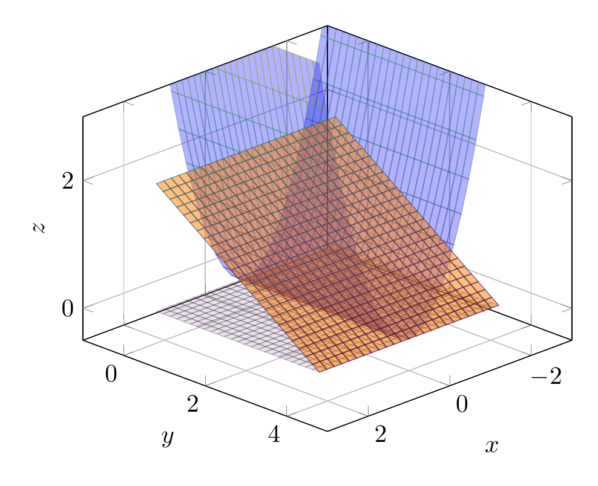

Please solve the problem in the following image.
(Image `20260929_011138_489609_utc_0800_0.png`. Alt text: Image: human_20260929_011138_489609_utc_0800)
20260929_011138_489609_utc_0800_0.png
End of problem
Answer
# Problem Statement
Express the integral $\iiint_E f(x, y, z) \, dV$ as an iterated integral in six different ways, where $E$ is the solid bounded by the given surfaces:
1. $y = x^2$
2. $z = 0$
3. $y + 2z = 4$
# Analysis of the Solid $E$
To express the triple integral in different orders, we first need to understand the geometry of the solid $E$.
### 1. Identify the bounding surfaces
* **Surface 1:** $y = x^2$ is a parabolic cylinder opening along the $z$-axis.
* **Surface 2:** $z = 0$ is the $xy$-plane.
* **Surface 3:** $y + 2z = 4$ can be rewritten as $z = \frac{4 - y}{2}$. This is a plane.
### 2. Determine the intersection and projection
* The intersection of $z = 0$ and $y + 2z = 4$ gives $y = 4$.
* The intersection of $y = x^2$ and $y = 4$ gives $x^2 = 4$, so $x = -2$ and $x = 2$.
* The projection of the solid onto the $xy$-plane ($z=0$) is the region $D$ bounded by $y = x^2$ and $y = 4$.
* The projection of the solid onto the $yz$-plane ($x=0$) is the triangle bounded by $z=0$, $y=0$ (from the vertex of $y=x^2$), and $y + 2z = 4$ (which is $y = 4 - 2z$).
* The projection of the solid onto the $xz$-plane ($y=0$) is a single point or line? Let's see. Since $y = x^2 \ge 0$, $y$ can only be $0$ when $x=0$. For $x \neq 0$, $y > 0$. Thus, the $xz$ projection is essentially a region where $x^2 \le y \le 4-2z$.
### 3. Visualization
Below is a 3D visualization of the bounding surfaces.
---
\documentclass[border=10pt]{standalone}
\usepackage{pgfplots}
\usepgfplotslibrary{colormaps}
\pgfplotsset{trig format plots=rad}
\begin{document}
\begin{tikzpicture}
\begin{axis}[
view={135}{30},
xlabel=$x$, ylabel=$y$, zlabel=$z$,
xmin=-3, xmax=3,
ymin=-1, ymax=5,
zmin=-0.5, zmax=3,
grid=both,
colormap/viridis
]
% Surface y = x^2
\addplot3[surf, domain=-2.2:2.2, y domain=0:4, opacity=0.3, blue] {x^2};
% Surface z = 0
\addplot3[surf, domain=-2.2:2.2, y domain=0:4, opacity=0.2, gray] {0};
% Surface y + 2z = 4 => z = (4-y)/2
\addplot3[surf, domain=-2.2:2.2, y domain=0:4, opacity=0.5, orange] {(4-y)/2};
\end{axis}
\end{tikzpicture}
\end{document}

pgfplots_0.png
---
# Six Iterated Integrals
We can choose the order of integration in $x, y, z$ in $3! = 6$ ways.
### 1. Order $dz \, dy \, dx$ (Projection on $xy$-plane)
We first integrate with respect to $z$. For a fixed $(x, y)$, $z$ varies from the bottom surface $z = 0$ to the top surface $z = \frac{4-y}{2}$.
The projection onto the $xy$-plane is bounded by $y = x^2$ and $y = 4$.
For a fixed $x$, $y$ goes from $x^2$ to $4$.
The range of $x$ is $[-2, 2]$.
$$
\int_{-2}^{2} \int_{x^2}^{4} \int_{0}^{\frac{4-y}{2}} f(x, y, z) \, dz \, dy \, dx
$$
### 2. Order $dz \, dx \, dy$ (Projection on $xy$-plane)
Again, $z$ goes from $0$ to $\frac{4-y}{2}$.
The projection onto the $xy$-plane is the same. For a fixed $y$, $x$ goes from $-\sqrt{y}$ to $\sqrt{y}$.
The range of $y$ is $[0, 4]$.
$$
\int_{0}^{4} \int_{-\sqrt{y}}^{\sqrt{y}} \int_{0}^{\frac{4-y}{2}} f(x, y, z) \, dz \, dx \, dy
$$
### 3. Order $dy \, dz \, dx$ (Projection on $xz$-plane)
For a fixed $(x, z)$, $y$ varies from the parabolic cylinder $y = x^2$ to the plane $y = 4 - 2z$.
To find the limits for $z$, we look at the boundary $x^2 = 4 - 2z$, which gives $z = \frac{4 - x^2}{2}$.
The range of $z$ is $[0, \frac{4-x^2}{2}]$.
The range of $x$ is $[-2, 2]$.
$$
\int_{-2}^{2} \int_{0}^{\frac{4-x^2}{2}} \int_{x^2}^{4-2z} f(x, y, z) \, dy \, dz \, dx
$$
### 4. Order $dy \, dx \, dz$ (Projection on $xz$-plane)
For a fixed $(x, z)$, $y$ goes from $x^2$ to $4 - 2z$.
For a fixed $z$, $x$ varies such that $x^2 \le 4 - 2z$, so $x \in [-\sqrt{4 - 2z}, \sqrt{4 - 2z}]$.
The range of $z$ is $[0, 2]$ (since $4-2z \ge 0 \implies z \le 2$).
$$
\int_{0}^{2} \int_{-\sqrt{4-2z}}^{\sqrt{4-2z}} \int_{x^2}^{4-2z} f(x, y, z) \, dy \, dx \, dz
$$
### 5. Order $dx \, dy \, dz$ (Projection on $yz$-plane)
For a fixed $(y, z)$, $x$ varies from $-\sqrt{y}$ to $\sqrt{y}$ (from $y = x^2$).
The projection on the $yz$-plane is the triangle bounded by $z=0$, $y=0$, and $y + 2z = 4$.
Wait, the boundary $y=0$ comes from the limit of $y=x^2$ at $x=0$.
For a fixed $z$, $y$ goes from $0$ to $4 - 2z$.
The range of $z$ is $[0, 2]$.
$$
\int_{0}^{2} \int_{0}^{4-2z} \int_{-\sqrt{y}}^{\sqrt{y}} f(x, y, z) \, dx \, dy \, dz
$$
### 6. Order $dx \, dz \, dy$ (Projection on $yz$-plane)
For a fixed $(y, z)$, $x$ varies from $-\sqrt{y}$ to $\sqrt{y}$.
The projection on the $yz$-plane is the same triangle. For a fixed $y$, $z$ goes from $0$ to $\frac{4-y}{2}$.
The range of $y$ is $[0, 4]$.
$$
\int_{0}^{4} \int_{0}^{\frac{4-y}{2}} \int_{-\sqrt{y}}^{\sqrt{y}} f(x, y, z) \, dx \, dz \, dy
$$
# Final Answer
The six iterated integrals are:
1. $\int_{-2}^{2} \int_{x^2}^{4} \int_{0}^{\frac{4-y}{2}} f(x, y, z) \, dz \, dy \, dx$
2. $\int_{0}^{4} \int_{-\sqrt{y}}^{\sqrt{y}} \int_{0}^{\frac{4-y}{2}} f(x, y, z) \, dz \, dx \, dy$
3. $\int_{-2}^{2} \int_{0}^{\frac{4-x^2}{2}} \int_{x^2}^{4-2z} f(x, y, z) \, dy \, dz \, dx$
4. $\int_{0}^{2} \int_{-\sqrt{4-2z}}^{\sqrt{4-2z}} \int_{x^2}^{4-2z} f(x, y, z) \, dy \, dx \, dz$
5. $\int_{0}^{2} \int_{0}^{4-2z} \int_{-\sqrt{y}}^{\sqrt{y}} f(x, y, z) \, dx \, dy \, dz$
6. $\int_{0}^{4} \int_{0}^{\frac{4-y}{2}} \int_{-\sqrt{y}}^{\sqrt{y}} f(x, y, z) \, dx \, dz \, dy$
$$
\boxed{
\begin{aligned}
&\int_{-2}^{2} \int_{x^2}^{4} \int_{0}^{\frac{4-y}{2}} f(x, y, z) \, dz \, dy \, dx, \\
&\int_{0}^{4} \int_{-\sqrt{y}}^{\sqrt{y}} \int_{0}^{\frac{4-y}{2}} f(x, y, z) \, dz \, dx \, dy, \\
&\int_{-2}^{2} \int_{0}^{\frac{4-x^2}{2}} \int_{x^2}^{4-2z} f(x, y, z) \, dy \, dz \, dx, \\
&\int_{0}^{2} \int_{-\sqrt{4-2z}}^{\sqrt{4-2z}} \int_{x^2}^{4-2z} f(x, y, z) \, dy \, dx \, dz, \\
&\int_{0}^{2} \int_{0}^{4-2z} \int_{-\sqrt{y}}^{\sqrt{y}} f(x, y, z) \, dx \, dy \, dz, \\
&\int_{0}^{4} \int_{0}^{\frac{4-y}{2}} \int_{-\sqrt{y}}^{\sqrt{y}} f(x, y, z) \, dx \, dz \, dy.
\end{aligned}
}
$$